Куда мы все катимся?
Беда Илья, bro.agency
Кто я?
- Тимлид и один из основателей bro.agency
- Разрабатываю веб-формочки на python в течение 8 лет
- Продвигаю функциональное программирование в массы
- Провожу воркшопы и мастер-классы
Про что доклад?
- JavaScript сейчас на гребне волны
- Я расскажу свой личный опыт. Свое видение индустрии
- Расскажу о причинах, по которым произошел такой бурный рост JavaScript
- Расскажу о проблемах и возможном пути их решения
Когда-то давно все было просто
<script type="text/javascript">
$(document).ready(function() {
$(".fancybox").fancybox();
});
</script>
Когда-то давно все было просто
<script type="text/javascript">
$(document).ready(function() {
$(".fancybox").fancybox(); });
</script>
Потом стало немного сложнее
<script type="text/javascript">
$(document).ready(function() {
$("p").click(function() {
$(this).slideUp();
});
});
</script>
Потом стало немного сложнее
<script type="text/javascript">
$(document).ready(function() { $("p").click(function() {
$(this).slideUp();
}); });
</script>
Дальше появилась динамика
<script type="text/javascript">
$.get("ajax/test.html", function(data) {
$(".result").html(data);
});
</script>
Дальше появилась динамика
<script type="text/javascript"> $.get("ajax/test.html", function(data) { $(".result").html(data);
});
</script>
Дальше появилась динамика
<script type="text/javascript">
$.get("ajax/test.html", function(data) { $(".result").html(data); });
</script>
Браузеры стали еще быстрее
- 2009 — Mozilla Firefox 3.5 TraceMonkey(SpiderMonkey)
- 2010 — Mozilla Firefox 4.0 JägerMonkey
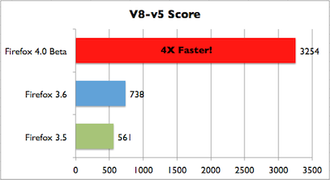
И все продолжили использовать JQuery
Кто из вас знает, почему JQuery плох для больших фронтенд проектов со сложной логикой?
Проблемы JQuery
- Не задает структуру проекта
- Не задает архитектуру приложения
- Набор низкоуровневых императивных примитивов
- Нет единого мнения, как делать правильно
- Очень много степеней свободы
Крупные компании с опытом сразу это понимали.
Они делали внутренние фреймворки для создания фронтенда.
Нельзя написать сложный фронтенд на JQuery без подготовки
<script type="text/javascript">
...
$('a.tra.papa').unbind('click');
$('a.tra.papa').bind(doSomething);
...
</script>
Нельзя написать сложный фронтенд на JQuery без подготовки
<script type="text/javascript">
... $('a.tra.papa').unbind('click'); $('a.tra.papa').bind(doSomething);
...
</script>
Нельзя написать сложный фронтенд на JQuery без подготовки
<script type="text/javascript">
...
$('a.tra.papa').unbind('click'); $('a.tra.papa').bind(doSomething); ...
</script>
Компромиcсы на бэкэнде
{% for fset, cap, tid in study_formsets.fset_cap_tid %}
$(function() {
$('.form_container_{{ tid }}').formset({
prefix: '{{ fset.prefix }}',
formCssClass: '{{ tid }}',
extraClasses: ['myrow1', 'myrow2']
});
});
{% endfor %}
У кого был legacy проект на JQuery, который хотелось быстрее забросить?
Самые стойкие извлекли урок и начали делать фронтенд по-другому
backbone.js 
- Шаблонизатор
- Не дает архитектуру
- Позволяет взять за основу MVC
marionettejs 
- Архитектура
- Набор хэлперов для backbone.js
- Data-Binding
AngularJS 
- Больше логики и структуры
- Все включено
- Полноценный фронтенд фреймворк
AngularJS
<!doctype html>
<html ng-app>
<head>
<script src="scripts/angular.1.5.3.min.js"></script>
</head>
<body>
<div>
<label>Name:</label>
<input type="text" ng-model="yourName" placeholder="Enter a name here">
<hr>
<h1>Hello {{yourName}}!</h1>
</div>
</body>
</html>
AngularJS
<!doctype html>
<html ng-app>
<head> <script src="scripts/angular.1.5.3.min.js"></script> </head>
<body>
<div>
<label>Name:</label>
<input type="text" ng-model="yourName" placeholder="Enter a name here">
<hr>
<h1>Hello {{yourName}}!</h1>
</div>
</body>
</html>
AngularJS
<!doctype html>
<html ng-app>
<head>
<script src="scripts/angular.1.5.3.min.js"></script>
</head>
<body>
<div>
<label>Name:</label> <input type="text" ng-model="yourName" placeholder="Enter a name here"> <hr>
<h1>Hello {{yourName}}!</h1>
</div>
</body>
</html>
AngularJS
<!doctype html>
<html ng-app>
<head>
<script src="scripts/angular.1.5.3.min.js"></script>
</head>
<body>
<div>
<label>Name:</label>
<input type="text" ng-model="yourName" placeholder="Enter a name here">
<hr> <h1>Hello {{yourName}}!</h1> </div>
</body>
</html>
AngularJS
- Код из примеров и документации не подходит для реальных проектов
- Много магии, которую ты не понимаешь
- С определенного момента, не зная эту магию, нельзя создавать эффективные приложения
React 
- Функциональный подход к фронтенду
- Фронтенд как чистая функция от состояния
Фронтенд как чистая функция от состояния
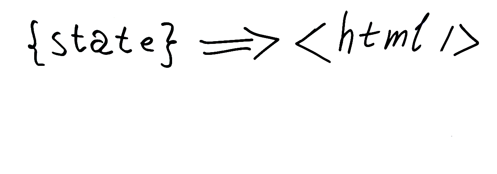
Фронтенд как чистая функция от состояния
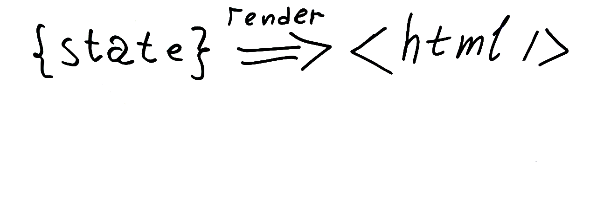
Фронтенд как чистая функция от состояния
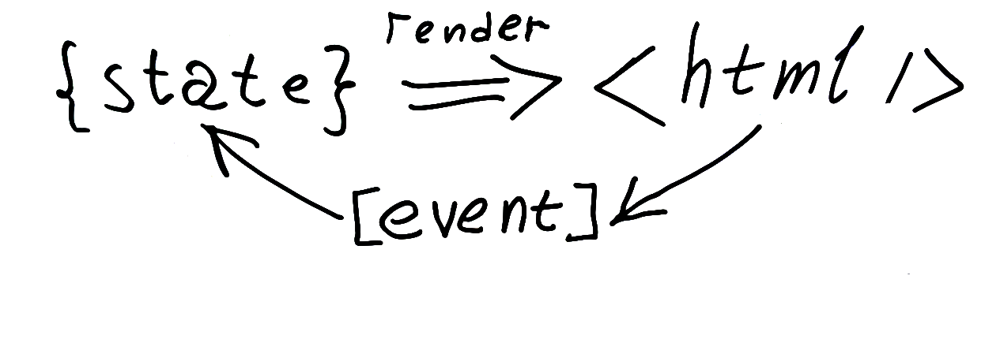
React открыл дверь функциональному миру во фронтенд 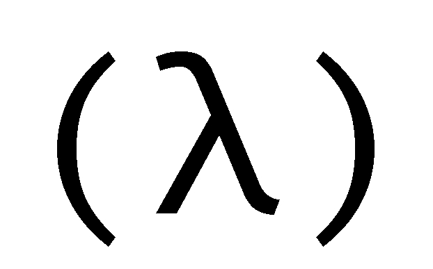
Виртуальный дом решил проблему производительности, что позволило использовать концепции реактивного программирования для фронтенда на реальных проектах
Webcomponents
Создатели браузеров знают, как делать фронтенд, и предлагают свою концепцию компонетного подхода в вебе.
Angular2
Это абсолютно новый фреймворк
Предлагает изначально пользоваться TypeScript
Gradual typing
Недостаточно писать код на императивном языке со слабой динамической типизацией
Нужно больше гарантий - нужна система типов
Развитие идет колоссальными темпами
Почему идет такой стремительный рост и развитие фронтенда?
Достаточно освоить JavaScript, и ты можешь писать фуллстек приложения и оптимизировать свой рабочий процесс
node.js
Полностью гомогенная структура
В отличие от:
- C/C++ и Makefile
- Android и gradle
Быстрорастущая индустрия создает проблемы
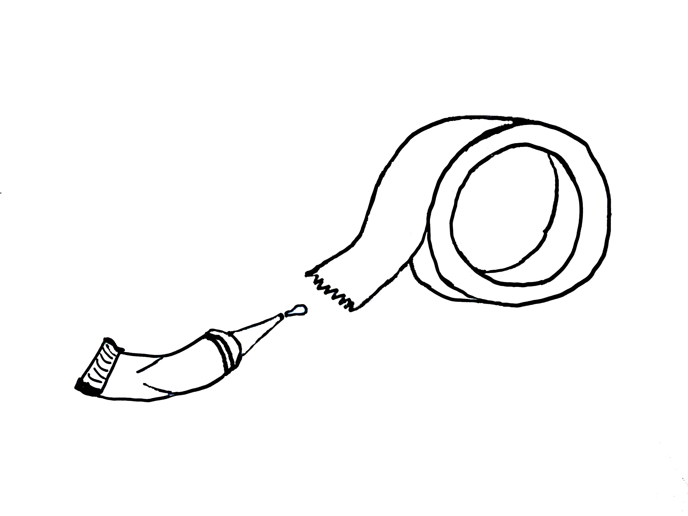
Проблемы зависимостей и менеджера пакетов
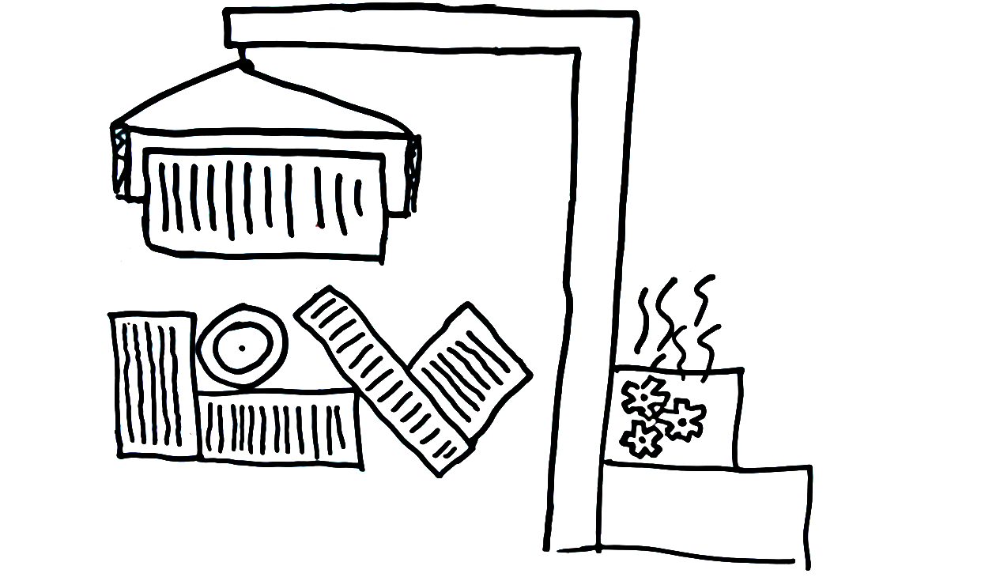
npm -> npm2 -> npm3
- npm 1 — dependency hell
- npm 2
- npm 3
npm -> npm2 -> npm3
- npm 1 — dependency hell
- npm 2
- npm 3
npm -> npm2 -> npm3
- npm 1 — dependency hell
- npm 2 — 1,5 GB зависимостей в node_modules
- npm 3
npm -> npm2 -> npm3
- npm 1 — dependency hell
- npm 2 — 1,5 GB зависимостей в node_modules
- npm 3 — долгая установка: 40 минут занимает разворачивание проекта с нуля
npm -> npm2 -> npm3
- npm 1 — dependуncy hell
- npm 2 — 1,5 GB зависимостей в node_modules
- npm 3 — долгая установка: 40 минут занимает разворачивание проекта с нуля
- npm 3 — если жестко фиксировать версии, работает как npm2
ReactRouter v1.0.2
Минорное изменение в history с 1.12 на 1.13 сломало ReactRouter
Разработчики не всегда следуют спецификации semver
React Native
Проект начали в ноябре на react-native 0.13.0
В процессе разработки обновились до 0.15.0, дальше не получилось
Закончили активную разработку при 0.19.0
Сейчас 0.23.0
React Native
Проект начали в ноябре на react-native 0.13.0
В процессе разработки обновились до 0.15.0, дальше не получилось
Закончили активную разработку при 0.19.0
Сейчас 0.24.1
Баги на этапе установки зависимостей
Баги на этапе установки зависимостей
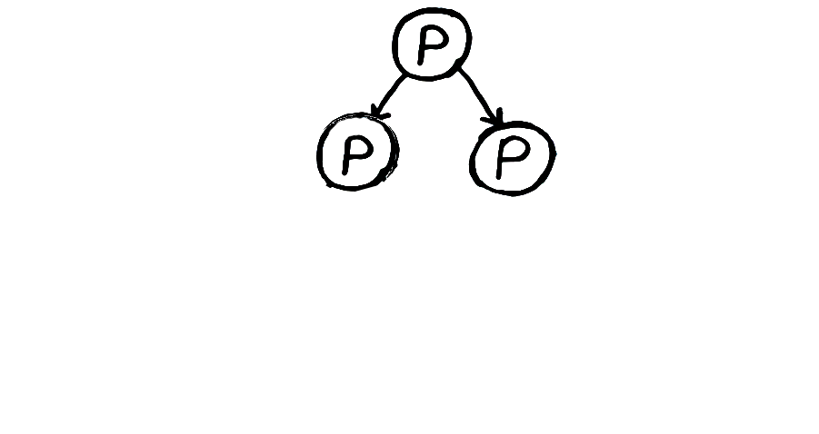
Баги на этапе установки зависимостей
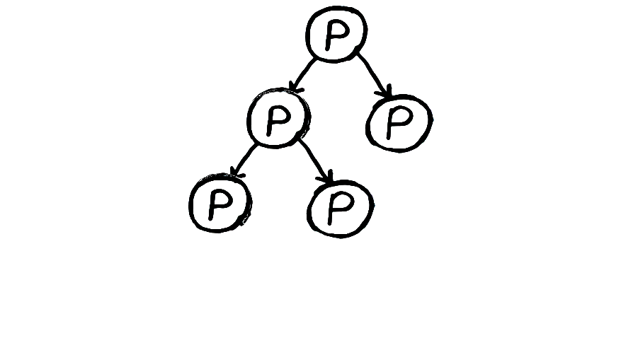
Баги на этапе установки зависимостей
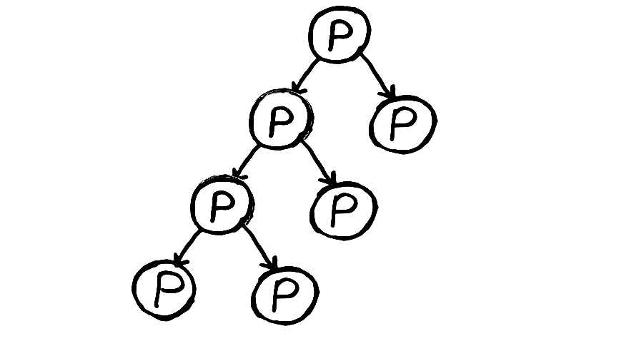
Новый стек - новый toolset
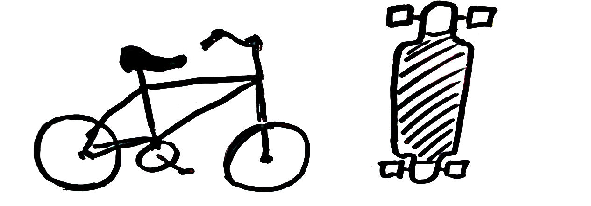
Иммутабельные данные в мутабельном языке
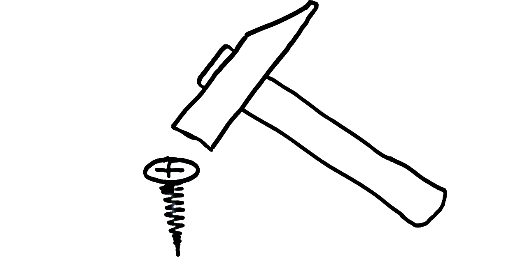
Иммутабельные данные в мутабельном языке
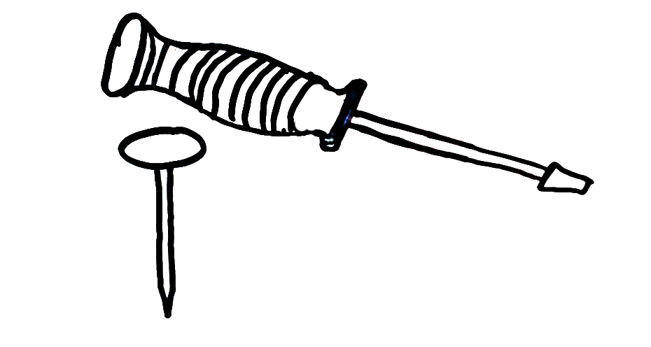
“Головокружение от успехов”
Цикличность мира
Мы пытаемся использовать старые добрые инструменты для решения новых задач более высокого уровня
Цикличность мира
Но это уже с нами было
Цикличность мира
Мы имеем проблемы, аналогичные тем, что были у JQuery, но на уровне инфраструктуры и языка
Elm
- Статически типизированный с автоматическим выводом типов
- Изначально ориентирован на фронтенд
- Свой менеджер пакетов
- Интеграция с JavaScript
- Интеграция с webpack и React
Статически типизированный с автоматическим выводом типов
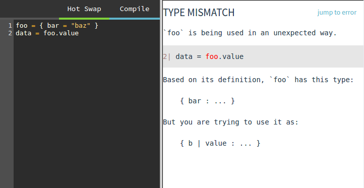
Изначально ориентирован на фронтенд
- The Elm Architecture
- Реактивный
- Компоненты могут вкладываться друг в друга бесконечно
- Высокая модульность и ориентированность на повторное использование кода
Реактивный
- Интерфейс — свертка потока событий
- Логирование всех событий
- Time travel debugger
Свой менеджер пакетов
- Содержит все необходимые базовые примитивы
- Легко интегрируется с github
- Документация генерируется автоматически
- Строго следит за тем, чтобы пакеты следовали semver
Интеграция с JavaScript runtime
Elm interop guide
var div = document.getElementById('elm-stamps');
var stamps = Elm.embed(Elm.Stamps, div, { reset:[] });
stamps.ports.reset.send([]);
stamps.ports.count.subscribe(function(count) {
console.log(count);
});
Интеграция с JavaScript runtime
Elm interop guide
var div = document.getElementById('elm-stamps');var stamps = Elm.embed(Elm.Stamps, div, { reset:[] });stamps.ports.reset.send([]);
stamps.ports.count.subscribe(function(count) {
console.log(count);
});
Интеграция с JavaScript runtime
Elm interop guide
var div = document.getElementById('elm-stamps');
var stamps = Elm.embed(Elm.Stamps, div, { reset:[] });stamps.ports.reset.send([]);stamps.ports.count.subscribe(function(count) {
console.log(count);
});
Интеграция с JavaScript runtime
Elm interop guide
var div = document.getElementById('elm-stamps');
var stamps = Elm.embed(Elm.Stamps, div, { reset:[] });
stamps.ports.reset.send([]);stamps.ports.count.subscribe(function(count) {
console.log(count);
});
Интеграция с Webpack и React
Fork me on GitHub